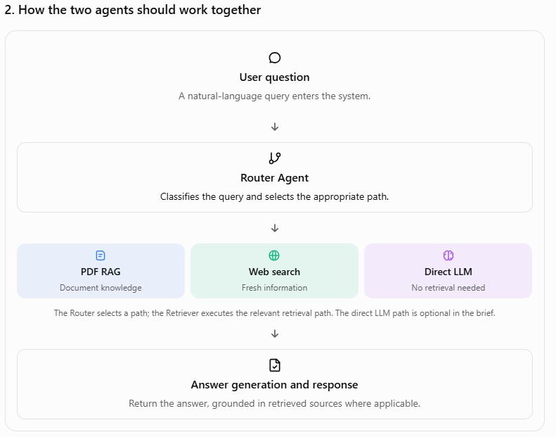
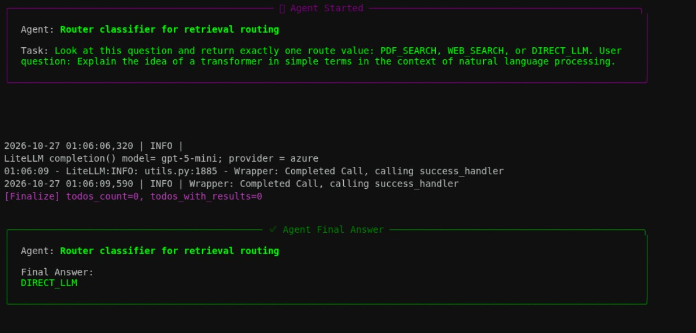
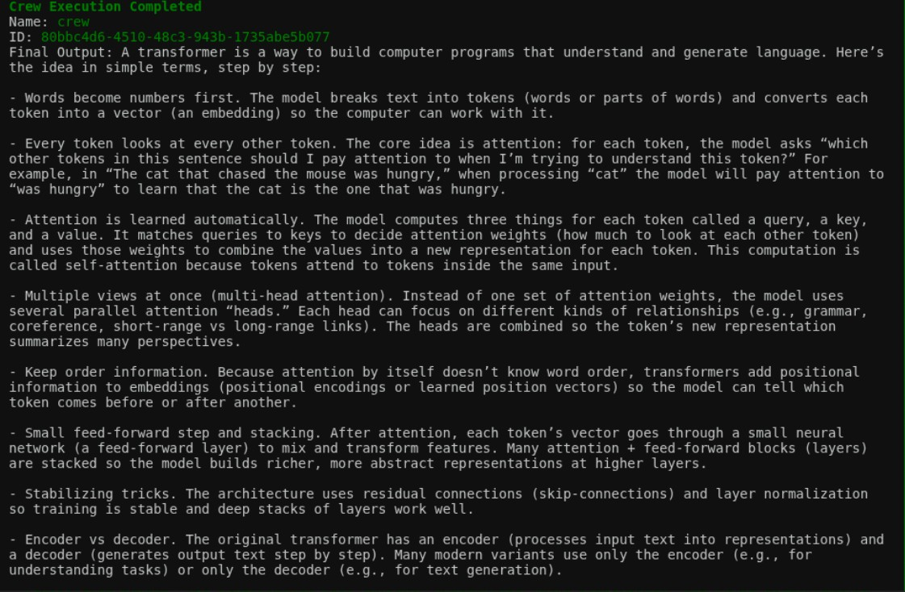
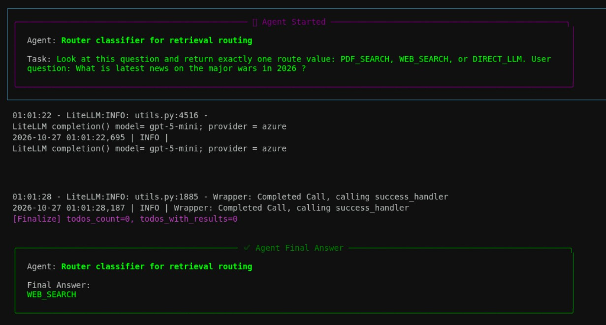
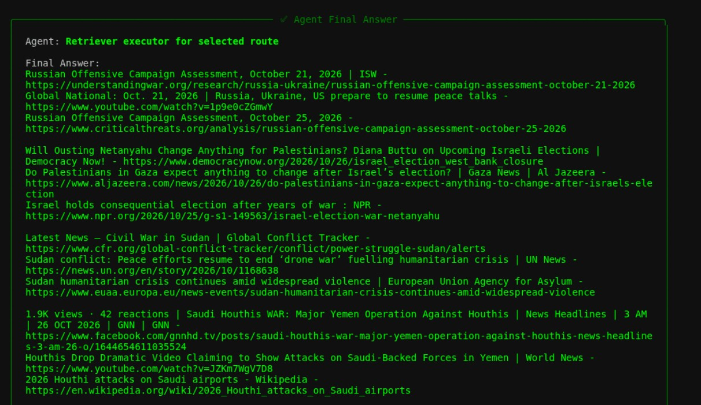
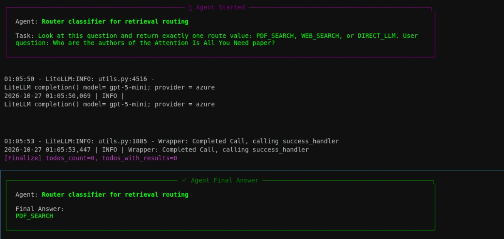
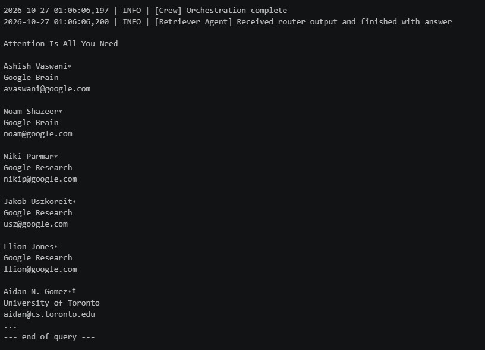
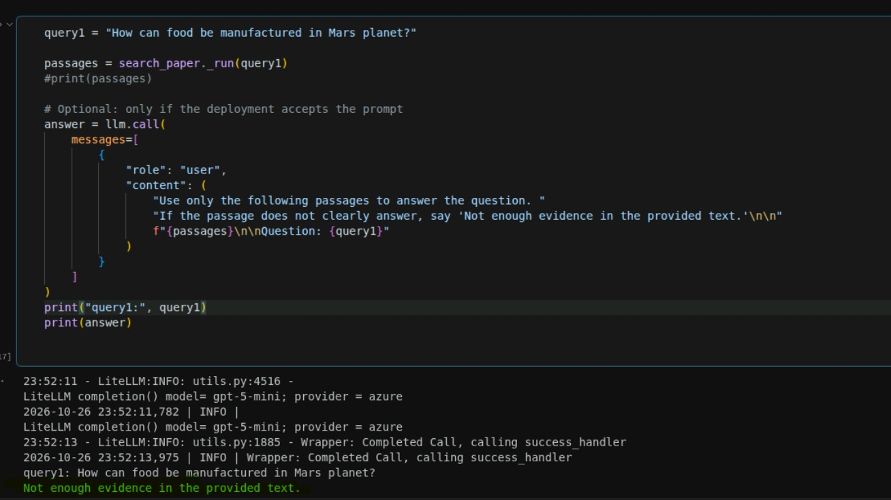

Multi-Agent Router-Retriever for Web and PDF-Grounded Answers
1. Project Overview
This project demonstrates an agentic multi-tool retrieval system that routes user queries to the most appropriate information source before generating a final response. The system is designed to handle multiple knowledge sources and select the most reliable one for each request.
LLM_DIRECT: direct answer generation when the query can be answered from the model’s internal knowledge or a simple contextual prompt
WEB_SEARCH: retrieval of current or public information from the web when the answer depends on real-time or external content
PDF_SEARCH: retrieval from domain-specific knowledge embedded in PDF documents or curated local knowledge bases
The objective of this project is to design a robust routing architecture that improves answer quality, reduces hallucinations, and ensures the response is grounded in the most relevant and reliable sources available.
This repository contains the implementation and demonstration notebook for a router-retriever multi-agent workflow, with emphasis on:
Intent classification
Tool routing
Retrieval from external web sources
Retrieval from local PDF content
Final response synthesis using an LLM
2. Problem Statement
In many real-world enterprise and research scenarios, user questions do not fit into a single source of truth. Some questions require:
a direct answer from general reasoning
current information from the web
structured domain knowledge stored in PDFs or internal documents
A naive single-pipeline system often fails because it either:
answers from stale or generic knowledge
retrieves irrelevant information
overuses web search when the answer exists in local documents
hallucinates when required information is missing from the chosen source
This project addresses that challenge by building a multi-agent routing system that decides the correct mode of operation for each user query and then synthesizes the final answer using the best source available.
3. Project Goal
Understand the user's intent
Route the question to the correct retrieval mode:
LLM_DIRECT
WEB_SEARCH
PDF_SEARCH
Collect the relevant evidence
Combine the findings into a grounded answer
Return a clear and explainable final result
4. Solution Approach
The system is implemented as a multi-agent architecture where a routing layer determines which tool or knowledge source should be used. The design works as follows:
A user submits a query
The router evaluates whether the question is answerable directly by the LLM, better answered using live web information, or better answered using content from a PDF or internal knowledge source
The chosen tool executes retrieval or search
The retrieved information is passed back into the reasoning process
The final answer is generated with context and source awareness
This approach improves answer quality by selecting the most relevant source instead of forcing a single retrieval method for all queries.
5. Architecture
The architecture below demonstrates the multi-agent orchestration and routing logic used in this project.

Core Components
User Query: the incoming question from the user
Router Agent: decides the best execution path
LLM_DIRECT: direct LLM reasoning path
Web Search Tool: for public and time-sensitive information
PDF Search Tool: for local document retrieval and knowledge grounding
Retrieval Layer: pulls relevant context from the selected source
Final Response Generator: synthesizes the answer with grounded evidence
Example Routing Logic
If the question is general and does not require recent information: route to LLM_DIRECT
If the query requires update-to-date news, facts, or current events: route to WEB_SEARCH
If the query depends on documentation, policy, PDF reports, or specialist content: route to PDF_SEARCH
router-retriever-multi_agent.ipynb: the main notebook implementing the multi-agent router-retriever workflow
Supporting Asset
mag_orchestration_router_retriever.jpg: architecture diagram for the system
1763366029_course_end_project_problem_statement.pdf: course-end project problem statement
7. Workflow and Execution Flow
Query enters the system
Router decides the source path
Tool selection occurs based on query type
Relevant documents or search results are retrieved
The LLM reasons over the retrieved context
Final answer is formatted and returned to the user
This pattern allows the system to handle mixed information needs more intelligently than a single-system retrieval chain.
8. Tools and Technologies Used
This project uses a modern agentic AI stack including:
Python
Jupyter Notebook
LLM orchestration framework
Web search integration
PDF/document retrieval support
Retrieval-augmented generation (RAG) concepts
Multi-agent reasoning pipeline
The implementation demonstrates how agentic tools can be composed to create a modular and explainable information retrieval system.
9. Use Cases
This architecture is useful for:
Customer support assistants
Research and knowledge assistants
Internal document Q&A systems
Public information retrieval agents
Domain-aware enterprise workflows
RAG-based systems requiring tool routing
It is especially effective when a system must answer queries from a mix of:
general language model knowledge
real-time external knowledge
trusted local documentation
10. Example Query Scenarios
Example 1: Direct Answer
Query: "What is the difference between RAG and fine-tuning?"
Expected route: LLM_DIRECT
Example 2: Web Search
Query: "What is the latest AI regulation announcement from the government this week?"
Expected route: WEB_SEARCH
Example 3: PDF Search
Query: "According to the project PDF, what are the key requirements for the end-to-end solution?"
Expected route: PDF_SEARCH
11. Agent Task Screenshots and Examples
The screenshots below show representative query/response pairs for each routing mode. Each pair captures the user input and the system’s decision path or result.
11.1 Query Routed to LLM_DIRECT


Description: The first image shows the router correctly classifying a general question for direct LLM reasoning. The second image shows the final answer generated without needing external retrieval.
11.2 Query Routed to WEB_SEARCH


Description: The first image shows the agent invoking the web search tool for a current-events question. The second image shows the grounded result returned from the live web search workflow.
11.3 Query Routed to PDF_SEARCH



Description: The first image demonstrates a document-grounded query routed to the PDF search path. The second image shows the correct answer retrieved from the PDF and grounded in the document evidence. The third image illustrates the router’s evidence-checking behavior for a non-relevant or unsupported query, helping prevent hallucinated or unsupported answers.
12. Expected Outcome
The expected result of this project is a working multi-agent routing design that:
improves answer relevance
minimizes unsupported or hallucinated responses
handles multiple information sources intelligently
provides a clear architecture for future expansion into production-grade agentic systems
This project is a practical demonstration of how a retrieval system can become more reliable by routing based on the type of question asked.
13. Challenges Faced
For bigger PDF documents, the chunking strategy fails as PDFSearchTool does not publicly expose any custom chunker size and tries to load the entire document at once causing RateLimitError.
Many a times, the prompt needed refinement to avoid LLM timing out and returning with failed response, requiring clear and concise instructions for context aware responses from the LLM.
Latency for certain queries are in minutes for multi-step reasoning tasks, implying that agentic AI is not suited for latency-sensitive real-time applications.
14. Summary
This project showcases a multi-agent system for routing user queries to the correct knowledge source using an agentic design pattern. By combining direct LLM reasoning with web- and PDF-grounded retrieval, it demonstrates how AI workflows can handle heterogeneous information more effectively.
It is a strong example of how agentic AI systems can be designed for practical business and research use cases where information comes from different modalities and sources.
PDF export note: Open this HTML file in a browser and choose Print → Save as PDF to preserve all images and screenshots in the generated document.